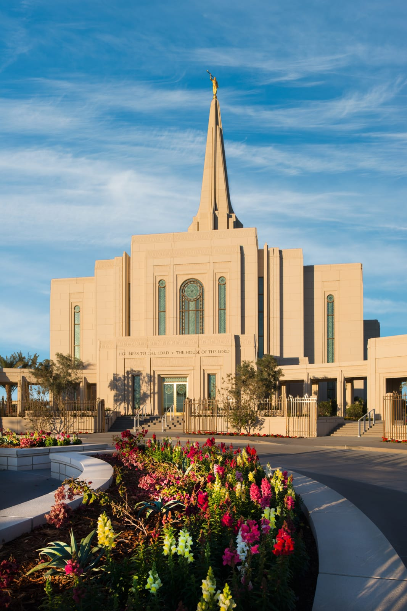
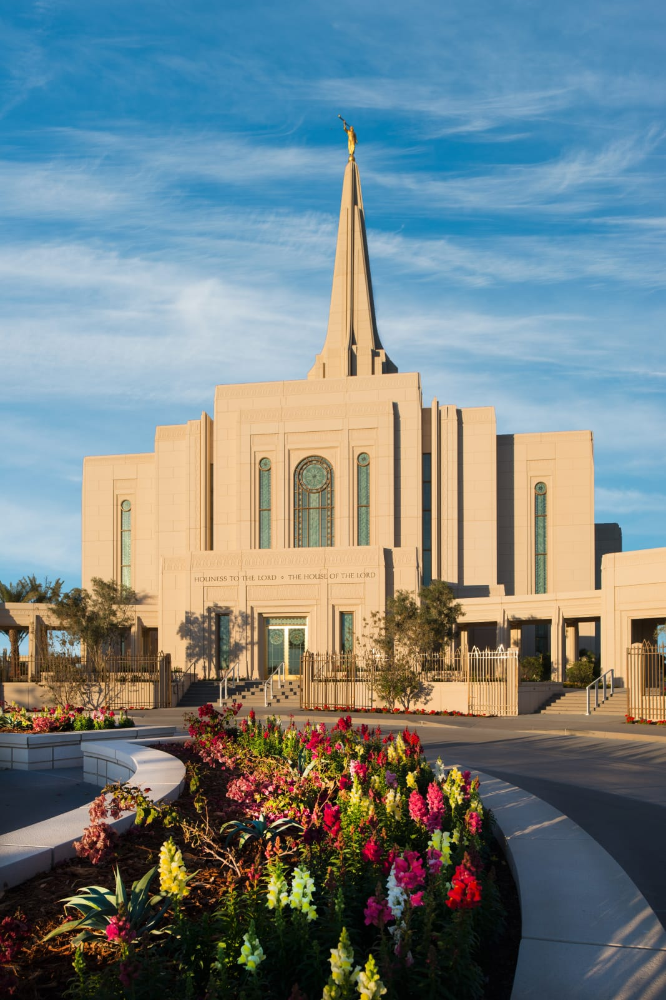

Welcome to Gilbert

 

About Gilbert
Gilbert was founded in 1920. Initially, it was a simple train stop between Phoenix and Florence that was built on the land of William "Bobby" Gilbert. The train siding eventually resulted in a community around it. The land was prime for farming because of the Roosevelt Dam and some canals nearby. Gilbert quickly became known as the "Hay Capital of the World". Although there was a population of a meager 1,971 residents in 1970, now there is a whopping 262,514! In the earlier days of Gilbert, most of its population consisted of farmers and catttle ranchers, but not it seems to mostly be normal residents with a day job in one of the nearby cities like Mesa or Phoenix, leaving a large amount of land for shopping centers, entertainment, and suburban residental areas.
Gilbert Chamber of Commerce
119 N Gilbert Rd
Unit 101
Gilbert, AZ 85234
United States
☎ (480) 892-0056